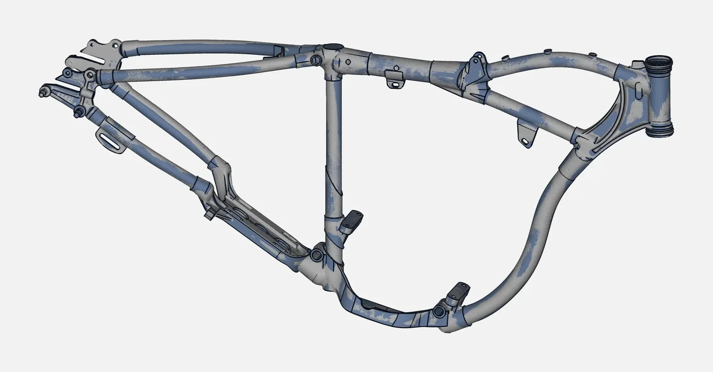

Last reviewed: November 2026
This article goes deep on the modelling step. For the full reverse engineering overview, read what is reverse engineering.
What is the difference between a scan and a CAD model?
A scan is a mesh: a very large number of small triangles that copy the surface of the part, including wear, casting texture and damage. You can measure it and compare it, but you cannot easily change a hole diameter, add a fillet or send it to a CNC programmer. A CAD model is built from real faces, sketches and features, so you can edit a dimension and the part updates. Scan to CAD is the work of rebuilding the second from the first.
How does a scan become an editable model in SolidWorks?
The steps below are the usual order. Your CAD software may use different menu names, and the SolidWorks terms are used here only as a common example.
1. Check and clean the mesh. Before any modelling, the scan is checked for holes, noise and double surfaces, and cleaned where needed. A poor mesh gives a poor model, so this step comes first. The scanner exports a mesh such as STL (the Vertex scanners export STL, PLY, ASC and TXT).
2. Set up the coordinate system. The mesh is aligned to a sensible origin and axes, usually from the main flat faces, the axes of cylinders or the way the part sits in its assembly. This decides how every later sketch and feature lines up.
3. Choose the modelling approach. Different areas of one part can need different treatment:
- Prismatic and machined areas: planes, cylinders and cones are fitted to the mesh and the model follows design intent, with clean dimensions instead of the scatter of the scan.
- Freeform areas: smooth surfaces are fitted closely to the scan, "as-is", for body panels, ergonomic shapes and blades.
- Hybrid: machined features to design intent and freeform areas surfaced to the scan. Most real parts are hybrid.
4. Fit sections and primitives to the mesh. Section sketches are cut through the mesh and used as the basis of the features. Planes, cylinders and other simple shapes are fitted to the matching areas of the scan. In SolidWorks terms, these become the sketches that drive extrudes, revolves and lofts.
5. Build the features and surfaces. The features are built in order, much as a designer would model the part from scratch: base shape, holes, ribs, fillets. Freeform areas are surfaced and trimmed together with the solid features. A parametric rebuild keeps the dimensions editable, so you can change a hole size or a wall later. How far a job goes toward fully parametric depends on the part and what you need.
6. Decide what to correct. A scan records wear and damage. The engineer decides what is the real design and what is wear, then models the intended shape. This is why a worn spare can be rebuilt as a clean part, and why you tell us the purpose of the part before we start.

7. Run the deviation check. The finished model is overlaid on the scan and the difference is shown as a colour map with statistics. This shows where the model follows the scan, and where a deliberate correction has moved it away. Areas outside what you expect are fixed and checked again. Where calipers, gauges or CMM values exist, known features are also checked against them.
8. Deliver the files. Neutral formats (see the next section), plus the STL scan on request.
Which file formats do you get?
| Format | What it is | When to use it |
|---|---|---|
| STEP | Neutral solid and surface model | The usual choice to open the model in SolidWorks and most other CAD software |
| IGES | Older neutral format, mainly surfaces and curves | When the receiving software or vendor asks for it |
| Parasolid | Solid-modelling kernel format used by several CAD systems | When your CAD software reads it directly |
| STL scan (on request) | The mesh of the scan | Records, printing, visualisation, checking against the model |
We deliver STEP, IGES, Parasolid and other neutral formats that open in your CAD software. Native SolidWorks files are not part of the standard delivery. A neutral file carries the shapes and dimensions; it does not carry the original feature tree of another system, so tell us how you plan to edit the model and we will say what you will receive.

Scan to CAD or mesh only: which do you need?
| What you want to do | Mesh only | Scan to CAD |
|---|---|---|
| Inspect a part against its nominal CAD | Yes | Not needed, but useful if no nominal CAD exists |
| Make a visual record or a render | Yes | No |
| 3D print a copy of the part | Often yes | Only if you want to change it |
| Change dimensions, add features, re-manufacture | No | Yes |
| Machine, mould or cast the part from a model | Rarely | Yes |
| Put the part into an assembly or a drawing | No | Yes |
| Rebuild a worn spare that has no drawing | No | Yes |
A mesh is faster to produce. A CAD model takes more engineering time but is the only version you can edit. If you are unsure, send the part and tell us what you will do with the file. We will say whether a mesh is enough. Quote on request.
How do we work, and what do we need from you?
We scan the part with a handheld JINUOSH Vertex scanner, rebuild it in CAD, check the deviation and hand over the files. For the scan itself, see handheld 3D scanner accuracy and how to scan shiny and dark parts. To get a useful model, tell us:
- what the model will be used for (manufacture, redesign, assembly, drawing)
- which dimensions or fits matter most
- which CAD software and file format you use
- whether wear or damage should be kept or corrected

Where do we do scan to CAD?
VShark Solutions works from Coimbatore, India, and serves clients in the UAE as a service area. We cover 3D scanning services in India, reverse engineering services in India and how we rebuild a spare part that has no drawing. By industry, see automotive reverse engineering, mould and die scanning, casting and foundry scanning and industrial machinery spare parts. To check a finished part against its CAD, see our CMM inspection services in Coimbatore. If you only need a print, read from 3D scan to 3D print. Scanner enquiries are on the JINUOSH Vertex 3D scanner page. VShark is a distributor of JINUOSH.